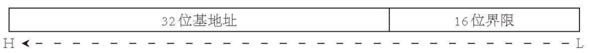

05 读取内核并进入保护模式
事实上，读入内核的方法与读入 Loader 完全一致，因此为了可读性着想，我们只需要更改几个变量名，再改几条字符串，便可告成。事实上我们完全可以把这个过程写成函数，但鉴于引导扇区 446 字节的限制过于恶心和做成函数后的堆栈操作占据的空间，我们还是直接复制粘贴吧。
在此之前，我们先把 FAT12 相关的东西放到一起：
代码 5-1 FAT12 文件系统相关（fat12hdr.inc）
BS_OEMName db 'tutorial' ; 固定的8个字节
BPB_BytsPerSec dw 512 ; 每扇区固定512个字节
BPB_SecPerClus db 1 ; 每簇固定1个扇区
BPB_RsvdSecCnt dw 1 ; MBR固定占用1个扇区
BPB_NumFATs db 2 ; FAT12 文件系统固定2个 FAT 表
BPB_RootEntCnt dw 224 ; FAT12 文件系统中根目录最大224个文件
BPB_TotSec16 dw 2880 ; 1.44MB磁盘固定2880个扇区
BPB_Media db 0xF0 ; 介质描述符，固定为0xF0
BPB_FATSz16 dw 9 ; 一个FAT表所占的扇区数，FAT12 文件系统固定为9个扇区
BPB_SecPerTrk dw 18 ; 每磁道扇区数，固定为18
BPB_NumHeads dw 2 ; 磁头数，bximage 的输出告诉我们是2个
BPB_HiddSec dd 0 ; 隐藏扇区数，没有
BPB_TotSec32 dd 0 ; 若之前的 BPB_TotSec16 处没有记录扇区数，则由此记录，如果记录了，这里直接置0即可
BS_DrvNum db 0 ; int 13h 调用时所读取的驱动器号，由于只挂在一个软盘所以是0
BS_Reserved1 db 0 ; 未使用，预留
BS_BootSig db 29h ; 扩展引导标记
BS_VolID dd 0 ; 卷序列号，由于只挂载一个软盘所以为0
BS_VolLab db 'OS-tutorial' ; 卷标，11个字节
BS_FileSysType db 'FAT12 ' ; 由于是 FAT12 文件系统，所以写入 FAT12 后补齐8个字节
FATSz equ 9 ; BPB_FATSz16
RootDirSectors equ 14 ; 根目录大小
SectorNoOfRootDirectory equ 19 ; 根目录起始扇区
SectorNoOfFAT1 equ 1 ; 第一个FAT表的开始扇区
DeltaSectorNo equ 17 ; 由于第一个簇不用，所以RootDirSectors要-2再加上根目录区首扇区和偏移才能得到真正的地址，故把RootDirSectors-2封装成一个常量（17）
下面是我们更改过后的 Loader 代码：
代码 5-2 新版 Loader （loader.asm）
org 0100h ; 告诉编译器程序将装载至0x100处
BaseOfStack equ 0100h ; 栈的基址
BaseOfKernelFile equ 08000h ; Kernel的基址
OffsetOfKernelFile equ 0h ; Kernel的偏移
jmp LABEL_START
%include "fat12hdr.inc"
LABEL_START:
mov ax, cs
mov ds, ax
mov es, ax ; 将ds es设置为cs的值（因为此时字符串和变量等存在代码段内）
mov ss, ax ; 将堆栈段也初始化至cs
mov sp, BaseOfStack ; 设置栈顶
mov dh, 0
call DispStr ; Loading
mov word [wSectorNo], SectorNoOfRootDirectory ; 开始查找，将当前读到的扇区数记为根目录区的开始扇区（19）
xor ah, ah ; 复位
xor dl, dl
int 13h ; 执行软驱复位
LABEL_SEARCH_IN_ROOT_DIR_BEGIN:
cmp word [wRootDirSizeForLoop], 0 ; 将剩余的根目录区扇区数与0比较
jz LABEL_NO_KERNELBIN ; 相等，不存在Kernel，进行善后
dec word [wRootDirSizeForLoop] ; 减去一个扇区
mov ax, BaseOfKernelFile
mov es, ax
mov bx, OffsetOfKernelFile ; 将es:bx设置为BaseOfKernel:OffsetOfKernel，暂且使用Kernel所占的内存空间存放根目录区
mov ax, [wSectorNo] ; 起始扇区：当前读到的扇区数（废话）
mov cl, 1 ; 读取一个扇区
call ReadSector ; 读入
mov si, KernelFileName ; 为比对做准备，此处是将ds:si设为Kernel文件名
mov di, OffsetOfKernelFile ; 为比对做准备，此处是将es:di设为Kernel偏移量（即根目录区中的首个文件块）
cld ; FLAGS.DF=0，即执行lodsb/lodsw/lodsd后，si自动增加
mov dx, 10h ; 共16个文件块（代表一个扇区，因为一个文件块32字节，16个文件块正好一个扇区）
LABEL_SEARCH_FOR_KERNELBIN:
cmp dx, 0 ; 将dx与0比较
jz LABEL_GOTO_NEXT_SECTOR_IN_ROOT_DIR ; 继续前进一个扇区
dec dx ; 否则将dx减1
mov cx, 11 ; 文件名共11字节
LABEL_CMP_FILENAME: ; 比对文件名
cmp cx, 0 ; 将cx与0比较
jz LABEL_FILENAME_FOUND ; 若相等，说明文件名完全一致，表示找到，进行找到后的处理
dec cx ; cx减1，表示读取1个字符
lodsb ; 将ds:si的内容置入al，si加1
cmp al, byte [es:di] ; 此字符与LOADER BIN中的当前字符相等吗？
jz LABEL_GO_ON ; 下一个文件名字符
jmp LABEL_DIFFERENT ; 下一个文件块
LABEL_GO_ON:
inc di ; di加1，即下一个字符
jmp LABEL_CMP_FILENAME ; 继续比较
LABEL_DIFFERENT:
and di, 0FFE0h ; 指向该文件块开头
add di, 20h ; 跳过32字节，即指向下一个文件块开头
mov si, KernelFileName ; 重置ds:si
jmp LABEL_SEARCH_FOR_KERNELBIN ; 由于要重新设置一些东西，所以回到查找Kernel循环的开头
LABEL_GOTO_NEXT_SECTOR_IN_ROOT_DIR:
add word [wSectorNo], 1 ; 下一个扇区
jmp LABEL_SEARCH_IN_ROOT_DIR_BEGIN ; 重新执行主循环
LABEL_NO_KERNELBIN: ; 若找不到kernel.bin则到这里
mov dh, 2
call DispStr ; 显示No KERNEL
jmp $
LABEL_FILENAME_FOUND:
mov ax, RootDirSectors ; 将ax置为根目录首扇区（19）
and di, 0FFF0h ; 将di设置到此文件块开头
push eax
mov eax, [es:di + 01Ch]
mov dword [dwKernelSize], eax
pop eax
add di, 01Ah ; 此时的di指向Kernel的FAT号
mov cx, word [es:di] ; 获得该扇区的FAT号
push cx ; 将FAT号暂存
add cx, ax ; +根目录首扇区
add cx, DeltaSectorNo ; 获得真正的地址
mov ax, BaseOfKernelFile
mov es, ax
mov bx, OffsetOfKernelFile ; es:bx：读取扇区的缓冲区地址
mov ax, cx ; ax：起始扇区号
LABEL_GOON_LOADING_FILE: ; 加载文件
push ax
push bx
mov ah, 0Eh ; AH=0Eh：显示单个字符
mov al, '.' ; AL：字符内容
mov bl, 0Fh ; BL：显示属性
; 还有BH：页码，此处不管
int 10h ; 显示此字符
pop bx
pop ax ; 上面几行的整体作用：在屏幕上打印一个点
mov cl, 1
call ReadSector ; 读取Kernel第一个扇区
pop ax ; 加载FAT号
call GetFATEntry ; 加载FAT项
cmp ax, 0FFFh
jz LABEL_FILE_LOADED ; 若此项=0FFF，代表文件结束，直接跳入Kernel
push ax ; 重新存储FAT号，但此时的FAT号已经是下一个FAT了
mov dx, RootDirSectors
add ax, dx ; +根目录首扇区
add ax, DeltaSectorNo ; 获取真实地址
add bx, [BPB_BytsPerSec] ; 将bx指向下一个扇区开头
jmp LABEL_GOON_LOADING_FILE ; 加载下一个扇区
LABEL_FILE_LOADED:
call KillMotor ; 关闭软驱马达
mov dh, 1 ; "Ready."
call DispStr
jmp $ ; 暂时停在此处
dwKernelSize dd 0 ; Kernel大小
wRootDirSizeForLoop dw RootDirSectors ; 查找Kernel的循环中将会用到
wSectorNo dw 0 ; 用于保存当前扇区数
bOdd db 0 ; 这个其实是下一节的东西，不过先放在这也不是不行
KernelFileName db "KERNEL BIN", 0 ; Kernel的文件名
MessageLength equ 9 ; 下面是三条小消息，此变量用于保存其长度，事实上在内存中它们的排序类似于二维数组
BootMessage: db "Loading " ; 此处定义之后就可以删除原先定义的BootMessage字符串了
Message1 db "Ready. " ; 显示已准备好
Message2 db "No KERNEL" ; 显示没有Kernel
DispStr:
mov ax, MessageLength
mul dh ; 将ax乘以dh后，结果仍置入ax（事实上远比此复杂，此处先解释到这里）
add ax, BootMessage ; 找到给定的消息
mov bp, ax ; 先给定偏移
mov ax, ds
mov es, ax ; 以防万一，重新设置es
mov cx, MessageLength ; 字符串长度
mov ax, 01301h ; ah=13h, 显示字符的同时光标移位
mov bx, 0007h ; 黑底白字
mov dl, 0 ; 第0行，前面指定的dh不变，所以给定第几条消息就打印到第几行
add dh, 3
int 10h ; 显示字符
ret
ReadSector:
push bp
mov bp, sp
sub esp, 2 ; 空出两个字节存放待读扇区数（因为cl在调用BIOS时要用）
mov byte [bp-2], cl
push bx ; 这里临时用一下bx
mov bl, [BPB_SecPerTrk]
div bl ; 执行完后，ax将被除以bl（每磁道扇区数），运算结束后商位于al，余数位于ah，那么al代表的就是总磁道个数（下取整），ah代表的是剩余没除开的扇区数
inc ah ; +1表示起始扇区（这个才和BIOS中的起始扇区一个意思，是读入开始的第一个扇区）
mov cl, ah ; 按照BIOS标准置入cl
mov dh, al ; 用dh暂存位于哪个磁道
shr al, 1 ; 每个磁道两个磁头，除以2可得真正的柱面编号
mov ch, al ; 按照BIOS标准置入ch
and dh, 1 ; 对磁道模2取余，可得位于哪个磁头，结果已经置入dh
pop bx ; 将bx弹出
mov dl, [BS_DrvNum] ; 将驱动器号存入dl
.GoOnReading: ; 万事俱备，只欠读取！
mov ah, 2 ; 读盘
mov al, byte [bp-2] ; 将之前存入的待读扇区数取出来
int 13h ; 执行读盘操作
jc .GoOnReading ; 如发生错误就继续读，否则进入下面的流程
add esp, 2
pop bp ; 恢复堆栈
ret
GetFATEntry:
push es
push bx
push ax ; 都会用到，push一下
mov ax, BaseOfKernelFile ; 获取Kernel的基址
sub ax, 0100h ; 留出4KB空间
mov es, ax ; 此处就是缓冲区的基址
pop ax ; ax我们就用不到了
mov byte [bOdd], 0 ; 设置bOdd的初值
mov bx, 3
mul bx ; dx:ax=ax * 3（mul的第二重用法：如有进位，高位将放入dx）
mov bx, 2
div bx ; dx:ax / 2 -> dx：余数 ax：商
; 此处* 1.5的原因是，每个FAT项实际占用的是1.5扇区，所以要把表项 * 1.5
cmp dx, 0 ; 没有余数
jz LABEL_EVEN
mov byte [bOdd], 1 ; 那就是奇数了
LABEL_EVEN:
; 此时ax中应当已经存储了待查找FAT相对于FAT表的偏移，下面我们借此来查找它的扇区号
xor dx, dx ; dx置0
mov bx, [BPB_BytsPerSec]
div bx ; dx:ax / 512 -> ax：商（扇区号）dx：余数（扇区内偏移）
push dx ; 暂存dx，后面要用
mov bx, 0 ; es:bx：(BaseOfKernelFile - 4KB):0
add ax, SectorNoOfFAT1 ; 实际扇区号
mov cl, 2
call ReadSector ; 直接读2个扇区，避免出现跨扇区FAT项出现bug
pop dx ; 由于ReadSector未保存dx的值所以这里保存一下
add bx, dx ; 现在扇区内容在内存中，bx+=dx，即是真正的FAT项
mov ax, [es:bx] ; 读取之
cmp byte [bOdd], 1
jnz LABEL_EVEN_2 ; 是偶数，则进入LABEL_EVEN_2
shr ax, 4 ; 高4位为真正的FAT项
LABEL_EVEN_2:
and ax, 0FFFh ; 只保留低4位
LABEL_GET_FAT_ENRY_OK: ; 胜利执行
pop bx
pop es ; 恢复堆栈
ret
KillMotor: ; 关闭软驱马达
push dx
mov dx, 03F2h ; 软驱端口
mov al, 0 ; 软盘驱动器：0，复位软盘驱动器，禁止DMA中断，关闭软驱马达
out dx, al ; 执行
pop dx
ret
之所以在此处关闭软驱马达是因为后面我们用不到软盘了。
引导扇区开头的部分也做了一点修改，因为 FAT12 的部分已经抽离出来了：
代码 5-3 引导扇区开头部分（boot.asm）
jmp short LABEL_START
nop ; BS_JMPBoot 由于要三个字节而jmp到LABEL_START只有两个字节 所以加一个nop
%include "fat12hdr.inc"
LABEL_START:
运行结果如下：
（图 5-1 不存在Kernel时的运行情况）
屏幕中出现了一行 No KERNEL，这是理所应当的，因为我们甚至连一个最简单的内核都没有写，马上来写一个：
代码 5-4 极简内核程序（kernel.asm）
[section .text]
global _start
_start: ; 此处假设gs仍指向显存
mov ah, 0Fh
mov al, 'K'
mov [gs:((80 * 1 + 39) * 2)], ax ; 第1行正中央，白色K
jmp $ ; 死循环
这里好像出现了很多我们之前的极简 Loader 没有的东西，这个 global 是什么，section .text 又是什么东西，为什么一上来还要定义一个 _start？
说实话，其实这些都和现在无关，完全是为了以后的考虑。前四节（包括这一节）我们一直在使用汇编，但更多的时候，我们为了方便理解甚至会使用 C 语言转写。如果未来能使用 C 语言，会不会方便得多？只是可惜，如果为了方便，继续使用纯二进制的话，写 C 恐怕会十分复杂，而且不一定能够成功（说多了都是泪.jpg）。
因此，我们为内核引入了一种可执行文件格式（当然不是我自己写的，我还没那个本事），叫做 ELF，全称不想写，目前广泛应用于 Linux 以及自制操作系统中（题外话：现在的自制操作系统可执行文件基本都是 ELF，少数使用 PE，也就是微软家 exe 文件的格式，自创格式的几乎没有）。
既然有 Linux 撑腰，想要用它自然十分容易，在一开头就下载了 i686-elf-tools-windows.zip（或者 i386-elf-gcc for mac，Linux 自己的 gcc 编译出来就是 ELF），用它包办编译和链接即可。使用下面的命令，即可轻松编译出一个 ELF 来（mac 用户把 i686 改成 i386，linux 用户去掉 i686-elf，链接选项加上 -m elf_i386）。
nasm -f elf -o kernel.o kernel.asm
i686-elf-ld -s -o kernel.bin kernel.o
写入的命令也要改一下：
edimg imgin:a.img copy from:loader.bin to:@: copy from:kernel.bin to:@: imgout:a.img
这样就把 kernel.bin 也给写入到磁盘里来了。
唉唉唉，别想避重就轻，你还没解释那堆东西到底是什么玩意呢。
uhh，好吧。global _start 和 _start: 是给链接器看的，以这种方式告诉链接器，ELF 程序从这里开始执行（ELF 程序的默认入口点都是 _start，这是一个约定。或许有人会问：“那 main 是什么？难道不重要吗？”其实还真的不重要，看看第 23 节没准就能获得解答）。section .text 是给 ld 看的，这样 ld 就会知道“哦，下面的部分都是代码而不是数据”，从而正确设置 ELF。至于为什么能把 section 放进中括号这种取址用的东西里，据说是一部分伪指令的特性，带与不带中括号有一些奇妙的不同；不过在这篇教程的语境下，可以认为它们是一样的。
再次运行，结果应如下图所示： （图 5-2 写入内核之后）
屏幕第四行出现了 Ready.，意味着我们的内核已经被成功读入了，下面我们进入保护模式吧。在保护模式中我们只做两件事：重新放置内核并进入内核，也就是下一节的内容。
首先来说一下，什么是保护模式？一般而言，我们认为只要有 GDT、 cs 是 GDT 选择子、cr0 寄存器的 PE 位是 1 的时候，当前 CPU 就处于保护模式。至于 GDT 和 cr0 是什么，将在接下来阐明。保护模式分为 16 位和 32 位两种，不过 16 位保护模式非常少见（也不是不可以，只要设置 16 位代码段和数据段就可以了，一个 flag 的事），后文除非特别指明，默认保护模式是 32 位的。
进入保护模式总共分为 6 步：
1.准备
GDT2.加载
GDT（lgdt）3.关中断
4.打开
A20地址线5.将
cr0的第0位置1（PE位）6.通过一个
jmp指令进入32位代码段
这其中又出现了很多生词， A20 是啥，中断又是什么？再加上上面挖的坑，接下来我们一块填了。
首先是 A20，它是一个什么东西呢？在曾经的 CPU 里，一共有 20 条地址线，编号为 A0~A19，这样就可以访问到共计 2^20=1MB 的内存。但是，后来内存大了，20 根地址线不够用了，到了 80286 时期，又涨到 24 根，这就衍生出了兼容性的问题（你看，又是兼容）：早期的 CPU 对于超过 1MB 的内存会重新指回 0x00，比如访问 FFFF:FFFF 并不会访问到预想中的 0x10FFEF，而是会指回 0xFFEF 去。这又来了五根地址线，不就麻烦了么？
intel 遂采取一种笨办法，既然多出来这一点会带来问题，那我找个地方，把新来的 A20 一关，不就行了么？你设置的地址是 0x100000，但 A20 一关，实际上相当于不管你第 20 位是多少，通通把它当成 0，于是 1MB 又变回了 0x000000，这就暴力地兼容了以往把内存指回去的方案。80286 还是 16 位，最大还是 0x10FFEF 的内存，所以关一个 A20 就够了；但 80386 以后加了 32 位，从而可以访问 4GB 内存，A21~A31 根本没人管，但 A20 却还是默认关着，只有第 20 位受伤的世界打成了。如果直接进入 32 位模式而不去打开 A20，那就相当于 12MB、34MB、5~6MB 等内存空间完全无法访问，因为这一位 CPU 不管，所以为了访问到全部内存，必须把 A20 打开。
唯一的问题就是把 A20 放在哪呢？请欣赏：兼容性问题的终极解决方案，键盘控制器——这里可谓人杰地灵，既要管理键盘，又要管理鼠标，甚至可以用键盘重启电脑，总之不差你一个 A20。于是，intel 就随便扒了一个键盘的空余引脚，用来控制 A20。这么搞唯一的问题就是它实在太慢了，于是又衍生出更多打开 A20 的方案，包括但不限于使用 int 15h 的扩展，以及访问其他端口等。我们使用的是 0x92 端口法，这个端口内的数值，第二位是 1，则表示开启 A20。
然后是 GDT（全局描述符表），它与 32 位保护模式下的内存寻址密切相关。32 位保护模式最大有 32 位的变量，因此可以指向 4GB 的内存空间，相比原先的 1MB 已有了很大提升。而原先段:偏移的寻址方案仍然适用，但此时的段寄存器值已经不再是地址的一部分，而是一种名叫选择子的鬼东西，后面再谈。
GDT 的表项就没有这么简单了，它被称为描述符。下图是一个描述符结构的简图（节选自《Orange'S：一个操作系统的实现》）：

（图 5-3 GDT 描述符结构）
粗看一眼就知道，第 5、6 字节的这些属性也好，段基址和段界限的存放位置也罢，都是需要单独存放的。下面是它们的声明：
代码 5-5 保护模式下段属性之类的声明（pm.inc）
DA_32 EQU 4000h
DA_LIMIT_4K EQU 8000h
DA_DPL0 EQU 00h
DA_DPL1 EQU 20h
DA_DPL2 EQU 40h
DA_DPL3 EQU 60h
DA_DR EQU 90h
DA_DRW EQU 92h
DA_DRWA EQU 93h
DA_C EQU 98h
DA_CR EQU 9Ah
DA_CCO EQU 9Ch
DA_CCOR EQU 9Eh
DA_LDT EQU 82h
DA_TaskGate EQU 85h
DA_386TSS EQU 89h
DA_386CGate EQU 8Ch
DA_386IGate EQU 8Eh
DA_386TGate EQU 8Fh
SA_RPL0 EQU 0
SA_RPL1 EQU 1
SA_RPL2 EQU 2
SA_RPL3 EQU 3
SA_TIG EQU 0
SA_TIL EQU 4
PG_P EQU 1
PG_RWR EQU 0
PG_RWW EQU 2
PG_USS EQU 0
PG_USU EQU 4
%macro Descriptor 3
dw %2 & 0FFFFh
dw %1 & 0FFFFh
db (%1 >> 16) & 0FFh
dw ((%2 >> 8) & 0F00h) | (%3 & 0F0FFh)
db (%1 >> 24) & 0FFh
%endmacro
%macro Gate 4
dw (%2 & 0FFFFh)
dw %1
dw (%3 & 1Fh) | ((%4 << 8) & 0FF00h)
dw ((%2 >> 16) & 0FFFFh)
%endmacro
上面用了一堆 equ 的语法的部分都是硬件规程。equ 本质上相当于 C++ 里的 #define，即：#define DA_32 0x4000 之类的。（nasm 里也有 %define，但是用得好像很少，都被 equ 和 %macro 给包了）除此之外，唯一需要解释的可能就是 Descriptor 这一块了（Gate 宏根本没有用到，所以也就不管它）。
从下面的代码可知，Descriptor 的用法是：Descriptor xxx, xxx, xxx。再由前文可以知道，文本模式显存基址是 0xb8000，与显存段一对比，显然第一个参数是段基址。第三个参数全是各种 DA_ 混合在一块，显然是段属性，也就是 GDT 描述符结构那个图里，BYTE6 和 BYTE5 去掉段界限的那一部分。而剩下的第二个参数，也就只能是段界限了。用这个宏最大的好处，无疑是简化了描述符的定义，看看其他的教程和书里是怎么定义描述符的就知道了，他们还在硬凹数位的时候，我们已经用上如此方便的宏了……（笑）不过这个宏也不是笔者的劳动成果，如此自夸怕是不太好 （前六节内容均基于《Orange'S：一个操作系统的实现》，有能力支持原作喵。至少就前六节而言，相当于这本书的二创了。）。
这个宏怎么就能定义出一个描述符呢？先得解释这个奇怪的语法。这个东西是汇编里的宏，和 C 语言中的 #define 非常相似。第一行的 %macro 表示宏开始，Descriptor 为宏名，4 为接收参数数量，接收的参数从 %1 开始逐渐递增表示。
接下来这一部分，一直到 %endmacro 为止，就是宏的本体了，里面是纯粹的位运算。最后是一个 %endmacro，表示宏结束。这里的宏就是纯粹的文本替换，也就是说，Descriptor 0, 0, 0 会被替换为：
dw 0 & 0FFFFh
dw 0 & 0FFFFh
db (0 >> 16) & 0FFh
dw ((0 >> 8) & 0F00h) | (0 & 0F0FFh)
db (0 >> 24) & 0FFh
什么，汇编居然有这么方便的位运算？那第四节
shr、and半天在干什么呢？
事实上，只有在编译期间可以被计算的量，才能够用上这么方便的东西，具体而言，有且只有常数和标签对应的地址是可以在编译期立即知道的。你要是想对一个寄存器做这些，没门，用 x86 指令去；对内存，更没门，这块地方都不知道是不是归内存管（有的外设会在内存里开辟一段空间来，驱动程序通过读写这段内存与外设交互），哪能随便让你算了。
好了，话说回来，我们来看看这五行都在干什么。
首先写入两个字节的段界限低 16 位（%2 是第二个参数表段界限），然后是两个字节的段基址低 16 位（%1 是第一个参数表段基址），再往下是一个字节的段基址第 16-23 位。与上面的图对照，正好是 BYTE0~BYTE4 的内容。
接下来的 BYTE5 到 BYTE6，用了一个 dw 来写入。首先把段界限右移 8 位，把原来第 16~19 位的位置变成第 8~11 位，也就是在 BYTE5~BYTE6 中它实际在的位置，然后用与运算把除了这四位以外的部分都设置成 0。后面则是把第三个参数里，把段界限占领的部分变成 0，最后把两个部分或在一起，拼成一个完整的 BYTE5~BYTE6。最后是段基址的高 8 位，写在 BYTE7。于是，这些位运算就这样把原来的三个参数拼成了内存里 8 字节的描述符。
下一步就是具体解释一下这个段寄存器里的值与 GDT 描述符之间的关系。事实上，这个段值也被称为选择子，下面是选择子的结构简图（同样节选自《Orange'S》）：

（图 5-4 选择子结构）
当 TI 和 RPL 均为0时，不难发现，此时的整个选择子就是它对应的描述符的偏移（一个 GDT 占 8 字节。事实上也正是因为一个 GDT 占 8 字节，intel 才敢在低三位塞点私货）。这两个小部分的作用后面还会提及，到第 22 节我们再揭晓。
那么下一个部分自然就是 lgdt 了，我们需要把下面的结构写入 gdtr 寄存器：

（图 5-5 gdtr 结构）
这个也不难理解，我们只需要按照上图中的结构写入就可以了。唯一需要注意的是这一段内存会在保护模式下被访问，所以写汇编时有 16 位意义下段的相对地址，要被转化为原来的段基址乘以 16 再加上相对地址的绝对地址。
下一步就是关中断了。中断的具体内容我们放到后面第 9、10 节解释，此处我们只需要知道对于这个东西的处理保护模式另有安排，因此为了以后的重新设置，此处暂时关闭。
最后便是 cr0，它属于控制寄存器（Control Register），共有四个（cr0+cr2~4）。下面是 cr0 的结构：
（图 5-6 cr0 结构）
可以看到，cr0 的最低位就是 PE 位，它的含义是：当它为 1 时，进入保护模式，当它为 0 时，为实模式。
最后一步，是一个跳转，跳转完后进入 32 位代码段，真正进入保护模式。这一段听起来很简单，但是实现上它却必须放在 16 位的代码段内，必然需要有一种方法来声明它要跳入 32 位代码段。我们的 nasm 编译器提供了 jmp dword 的方案，其作用正是如此。
那么以上部分我们就阐述清楚了，如果您不明白的话，看下面的代码大致就能明白了，它们在实际开发中位于 LABEL_START 之前：
代码 5-6 GDT 表结构（loader.asm）
LABEL_GDT: Descriptor 0, 0, 0 ; 占位用描述符
LABEL_DESC_FLAT_C: Descriptor 0, 0fffffh, DA_C | DA_32 | DA_LIMIT_4K ; 32位代码段，平坦内存
LABEL_DESC_FLAT_RW: Descriptor 0, 0fffffh, DA_DRW | DA_32 | DA_LIMIT_4K ; 32位数据段，平坦内存
LABEL_DESC_VIDEO: Descriptor 0B8000h, 0ffffh, DA_DRW | DA_DPL3 ; 文本模式显存，后面用不到了
GdtLen equ $ - LABEL_GDT ; GDT的长度
GdtPtr dw GdtLen - 1 ; gdtr寄存器，先放置长度
dd BaseOfLoaderPhyAddr + LABEL_GDT ; 保护模式使用线性地址，因此需要加上程序装载位置的物理地址（BaseOfLoaderPhyAddr）
SelectorFlatC equ LABEL_DESC_FLAT_C - LABEL_GDT ; 代码段选择子
SelectorFlatRW equ LABEL_DESC_FLAT_RW - LABEL_GDT ; 数据段选择子
SelectorVideo equ LABEL_DESC_VIDEO - LABEL_GDT + SA_RPL3 ; 文本模式显存选择子
上述代码定义了 gdt 的同时，也定义了 gdtr 和选择子。不过需要注意的是，这其中我们用到了 BaseOfLoaderPhyAddr，它的定义如下：
代码 5-7 新常量（load.inc）
BaseOfLoader equ 09000h ; Loader的基址
OffsetOfLoader equ 0100h ; Loader的偏移
BaseOfLoaderPhyAddr equ BaseOfLoader * 10h ; Loader被装载到的物理地址
BaseOfKernelFile equ 08000h ; Kernel的基址
OffsetOfKernelFile equ 0h ; Kernel的偏移
由于把 BaseOfLoader 和 OffsetOfLoader 也给搬进来了，boot.asm 中的这一部分就可以删除了。因此，引导扇区和 loader 的前面几行也应当相应做出更改：
代码 5-8 引导扇区头部（boot.asm）
org 07c00h ; 告诉编译器程序将装载至0x7c00处
BaseOfStack equ 07c00h ; 栈的基址
jmp short LABEL_START
nop ; BS_JMPBoot 由于要三个字节而jmp到LABEL_START只有两个字节 所以加一个nop
%include "fat12hdr.inc"
%include "load.inc"
代码 5-9 Loader头部（loader.asm）
org 0100h ; 告诉编译器程序将装载至0x100处
BaseOfStack equ 0100h ; 栈的基址
jmp LABEL_START
%include "fat12hdr.inc"
%include "load.inc"
%include "pm.inc"
经过一番整理，虽然简化了一点代码，但别忘了我们最原始的目标仍没达成。下面我们首先创建 32 位代码段，它位于 KillMotor 之后。
代码 5-10 32 位代码段（loader.asm）
[section .s32]
align 32
[bits 32]
LABEL_PM_START:
mov ax, SelectorVideo ; 按照保护模式的规矩来
mov gs, ax ; 把选择子装入gs
mov ah, 0Fh
mov al, 'P'
mov [gs:((80 * 0 + 39) * 2)], ax ; 这一部分写入显存是通用的
jmp $
开头又是之前没有解释，糊弄过去的 section。除了 .text、.data 这种有特殊意义的名字以外，剩下的名字都只是一种分割的表示，并没有实际的意义。下面的 align 32 和 bits 32，则是先设置内存按 32 位模式对齐，然后告知 nasm “已进入 32 位模式，以下指令请按照 32 位进行解读”。接下来在第 0 行正中央显示一个 P，并没有什么太大的改变，只是 gs 由实模式的 0B800h 变成了保护模式的 SelectorVideo。时刻记住，这样 CPU 会去查找 GDT 的段，并使用 GDT 的段基址来进行相对地址的访问。
下列代码用于进入保护模式。
代码 5-11 进入保护模式（loader.asm）
LABEL_FILE_LOADED:
call KillMotor ; 关闭软驱马达
mov dh, 1 ; "Ready."
call DispStr
lgdt [GdtPtr] ; 下面开始进入保护模式
cli ; 关中断
in al, 92h ; 使用A20快速门开启A20
or al, 00000010b
out 92h, al
mov eax, cr0
or eax, 1 ; 置位PE位
mov cr0, eax
jmp dword SelectorFlatC:(BaseOfLoaderPhyAddr + LABEL_PM_START) ; 真正进入保护模式
无非是按照上文的流程完整地做了一遍。重复一下，若一段内存在保护模式下被访问，则原来 16 位意义下段的相对地址，要被转化为原来的段基址乘以 16 再加上相对地址的绝对地址。 所以，这里要给 LABEL_PM_START 加上 BaseOfLoaderPhyAddr，后者是 BaseOfLoader 乘 16 的封装。
编译运行后，如果一切正常的话，运行结果应如下图：
（图 5-7 运行结果）
我们看到了白色的字母 P，这说明我们已经进入了保护模式。如果您还是不放心，可以把 jmp $ 换成 int 0，如果您的 QEMU 窗口中的文字开始无限变换，那么就说明我们成功进入了保护模式。